Temukan kekayaan kuliner Sulawesi Tenggara melalui resep khas yang kami sajikan.
×
Resep Sinonggi
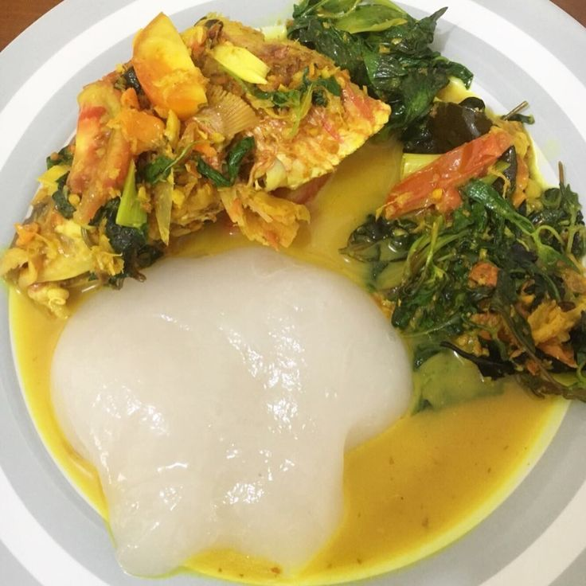
Sinonggi
Sinonggi adalah makanan khas Suku Tolaki, Sulawesi Tenggara yang terbuat dari pati sagu. Sinonggi memiliki tekstur kenyal dan lengket, serta rasanya yang hambar. Sinonggi biasanya disajikan dengan makanan lain yang memiliki cita rasa kuat, seperti kuah ikan, kuah daging, sayur ikan, atau sayur bening
Bahan-bahan:
Sagu 400 gram atau secukupnya
Air secukupnya
Sayur atau kuah Ikan
Daun Cemangi
Jeruk Nipis atau jeruk Purut dan lombok biji
Cara membuat:
Ambil sagu secukupnya dan masukkan ke dalam mangkuk yang cukup besar.
Cuci sagu tersebut di dalam mangkuk dan tiriskan airnya, tapi jangan sampai sagu benar-benar kering.
Panaskan air hingga mendidih dalam panci sekitar 1,5 liter.
Tuangkan air mendidih perlahan-lahan ke dalam mangkuk yang berisi sagu sambil terus diaduk.
Setelah sagu mulai kenyal dan berubah warna, adukannya dengan lebih kencang agar matangnya merata.
Sinonggi sudah siap! Sajikan dengan cara yang menarik dan nikmati bersama keluarga atau teman-teman.
×
Resep Ikan Parende
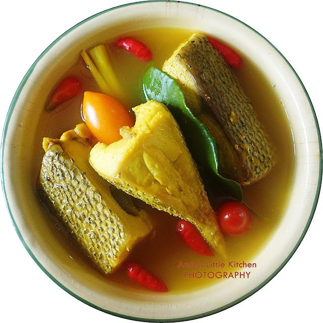
Ikan Parende
Salah satu makanan khas Buton, Sulawesi Tenggara berbahan dasar ikan segar adalah Parende. Parende merupakan sup ikan bumbu kuning rasa pedas berpadu asam dan gurih
Bahan-bahan:
750 ml air
2 siung bawang putih dirajang
4 buah bawang merah dirajang
2 sdm air asam (20gr asam jawa direndam dengan 50 ml air panas)
1 sdm gula
2 batang daun bawang
2 buah cabe merah dirajang
2 ekor ikan tengiri atau kerapu
Kunyit
1 buah jeruk lemon
Merica
2 sdm air perasan jeruk nipis atau lemon
Cara membuat:
Panaskan semua bahan 1 dengan api yang sedang hingga mendidih. Campur bahan 2 lalu aduk rata.
Setelah air mendidih, masukkan ikan lalu rebus hingga ikan matang (kurang lebih 10 menit). Angkat dan hidangkan. Sangat nikmat dikonsumsi saat masih hangat.
×
Resep Kabuto
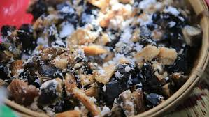
Kabuto
Kabuto adalah salah satu makanan yang terbuat dari singkong yang dikeringkan dan dimasak. Kabuto ini sangat mirip dengan gatot, salah satu makanan khas Jawa. Namun, kabuto bisa dinikmati dengan ikan asin atau lauk lainnya.
Bahan-bahan:
1 buah kakombo (singkong yang telah dikeringkan)
Garam secukupnya
Kelapa parut
Ikan asin (opsional)
Cara membuat:
Potong kakombo kecil-kecil lalu rendam dengan air selama semalam. Setelah itu tiriskan kakombo.
Siapkan panci kukusan, dan kukus kakombo selama 15-30 menit dengan api sedang.
Jika sudah matang, angkat dan biarkan agak dingin. Kemudian campurkan dengan garam secukupnya.
Sajikan kabuto dengan kelapa parut dan ikan asin.
×
Resep Kasoami
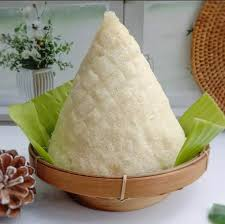
Kasoami
Kasoami adalah makanan olahan dari singkong khas Sulawesi Tenggara. Makanan ini cukup terkenal di Sulawesi Tenggara karena bentuknya yang unik dan menyerupai tumpeng. Terbuat dari singkong diparut, dikeringkan, kemudian disaring, dan dikukus. Makanan ini biasa disantap seperti makanan pokok pada umumnya yaitu dengan lauk dan sayuran.
Bahan-bahan:
1 kg singkong
1/2 sdt garam
Cara membuat:
Kupas singkong dan parut hingga halus. Peras di dalam kain agar airnya habis. Prosesnya bisa agak lama, sekitar 3 jam.
Jika sudah kering, hancurkan singkong parut yang menggumpal.
Tempatkan pada daun pisang yang sudah dibentuk kerucut.
Masukkan singkong dan kukus selama 30 menit atau hingga matang.
×
Resep Luluta
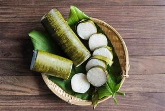
Luluta
Luluta merupakan makanan khas dari daerah Sulawesi Tenggara. Luluta adalah cara memasak nasi dengan cara dibakar di dalam bambu. Di daerah lain, makanan ini dikenal dengan nama lemang atau lemeng. Berikut adalah bahan dan cara membuatnya.
Bahan-bahan:
Beras (Merah atau Putih), secukupnya
Beberapa bilah bambu, secukupnya
Beberapa lembar daun pisang, secukupnya
Cara membuat:
Cuci beras hingga bersih dan tiriskan.
Bersihkan bagian dalam bilah bambu.
Bungkus beras dengan daun pisang dan masukkan ke dalam bilah bambu. Tutup ujung bambu dengan daun pisang.
Bakar bambu menggunakan kayu bakar atau batok kelapa.
Putar-putar batang bambu agar matangnya merata. Setelah matang, sajikan segera.
×
Resep Manu Kinowu
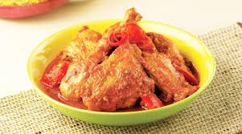
Manu Kinowu
Manu Kinowu adalah masakan khas dari Sulawesi Tenggara yang berbahan dasar ayam dengan bumbu rempah yang khas. Berikut adalah bahan-bahan dan cara membuatnya.
Bahan-bahan:
½ ekor ayam, bersihkan, potong menjadi 4 bagian
3 sendok makan minyak goreng untuk menumis
400 ml air
Bumbu:
2 cm jahe, geprek
2 lembar daun salam
1 ½ sendok teh garam
1 batang serai, geprek
1 buah tomat merah, potong-potong
½ sendok teh gula pasir
Bumbu Halus:
6 butir bawang merah
3 buah cabai merah besar
3 buah cabai merah keriting
Cara memasak:
Tumis bumbu halus bersama serai, jahe, dan daun salam hingga matang dan harum.
Masukkan ayam, aduk hingga ayam berubah warna.
Tambahkan tomat, aduk hingga tomat layu.
Tambahkan air, lalu masak sampai ayam matang dan bumbu meresap.
Angkat dan sajikan Manu Kinowu selagi hangat.
×
Resep Ikan Dole
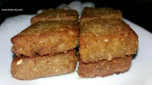
Ikan Dole
Ikan Dole adalah makanan khas dari Buton, Sulawesi Tenggara, yang memiliki cita rasa gurih. Bentuknya segitiga dan teksturnya khas karena terbuat dari ikan dan kelapa. Berikut adalah bahan dan cara membuatnya.
Bahan-bahan:
1 kg ikan layang (dapat diganti dengan ikan lain seperti ikan tenggiri, ikan kuwe, selar, tuna, atau baby tuna, yang penting jenis ikannya adalah ikan yang berdaging putih dan padat)
2 buah jeruk nipis
1 sdm garam kasar
1/2 sdm kunyit bubuk
1/4 bungkus penyedap rasa
Minyak goreng secukupnya
Bumbu:
1/2 buah kelapa yang tidak terlalu tua, disangrai
5 buah jeruk nipis
1/2 sdm jintan halus
1 1/2 sdm merica halus
1 1/2 sdm ketumbar halus
1 sdm garam kasar
1 bungkus penyedap rasa ayam
1/2 sdm gula pasir halus
2 butir telur
Cara membuat:
Bersihkan ikan dan lumuri dengan jeruk nipis, garam kasar, dan kunyit bubuk. Diamkan selama 15 menit, lalu bilas bersih.
Giling ikan hingga halus.
Campurkan ikan yang sudah halus dengan kelapa sangrai, bumbu halus, dan telur. Aduk hingga merata.
Bentuk adonan menjadi segitiga atau sesuai selera.
Panaskan minyak goreng, lalu goreng adonan hingga matang dan berwarna kecokelatan.
Angkat dan sajikan Ikan Dole selagi hangat.
×
Resep Sate Gogos Pokea
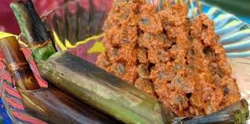
Sate Gogos Pokea
Sate Gogos Pokea merupakan penganan khas dari daerah Kali Pohara di Kabupaten Konawe, Sulawesi Tenggara. Dalam bahasa setempat, "pokea" adalah sebutan untuk kerang sungai endemik daerah tersebut. Berikut adalah bahan dan cara membuatnya.
Bahan-bahan:
300 gr daging kerang dara
20 buah tusuk sate dari lidi
350 ml air
Bumbu Halus:
1 1/2 sdm gula pasir
8 buah cabe rawit
5 siung bawang putih
2 cm lengkuas
1 sdt ketumbar bubuk
1/2 sdt merica bubuk
1 sdt garam
Bahan Pelengkap:
6 buah gogos (lemper tanpa isi, terbuat dari ketan matang yang dibungkus daun pisang, kemudian dikukus dan dibakar)
Cara membuat:
Rebus air hingga mendidih, lalu masukkan bumbu halus. Aduk rata hingga harum dan matang.
Masukkan kerang, masak hingga air mulai habis dan bumbu meresap.
Tusuk kerang pada tusuk lidi, masing-masing 5-7 buah sesuai selera.
Panggang sate di atas pan hingga harum dan sedikit kecokelatan.
Sajikan panas-panas bersama gogos.
×
Resep Kapusu Nosu
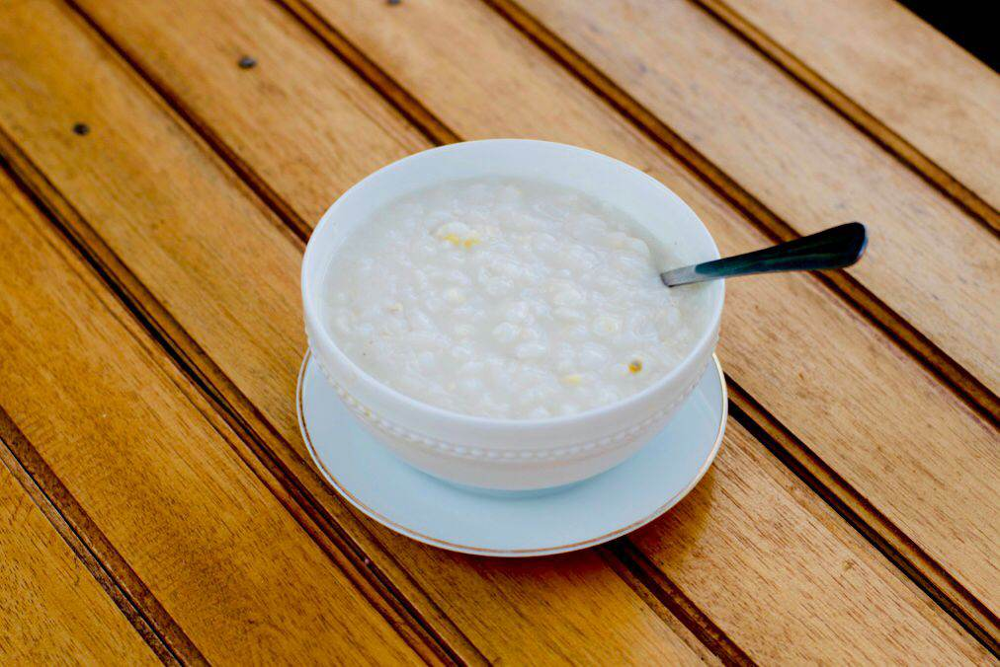
Kapusu Nosu
Kapusu Nosu adalah makanan khas Kendari yang berbahan dasar kacang merah yang dicampur dengan bubur jagung. Hidangan ini cukup terkenal di daerah Wakatobi, Sulawesi Tenggara. Berikut adalah bahan dan cara membuatnya.
Bahan-bahan:
300 ml air
750 ml santan kelapa
1 kg jagung tua
1 sdm gula
1 sdt garam
Cara membuat:
Rebus air hingga mendidih, lalu masukkan jagung yang sudah dipipil dan dicuci bersih.
Masak jagung hingga empuk, lalu tambahkan santan kelapa, gula, dan garam.
Aduk perlahan hingga bubur matang dan semua bahan tercampur rata.
Sajikan hangat sebagai menu sarapan atau camilan.
×
Resep Ikan Dole
Ikan Dole
Ikan Dole adalah makanan khas dari Buton, Sulawesi Tenggara, yang memiliki cita rasa gurih. Bentuknya segitiga dan teksturnya khas karena terbuat dari ikan dan kelapa. Berikut adalah bahan dan cara membuatnya.
Bahan-bahan:
1 kg ikan layang (dapat diganti dengan ikan lain seperti ikan tenggiri, ikan kuwe, selar, tuna, atau baby tuna, yang penting jenis ikannya adalah ikan yang berdaging putih dan padat)
2 buah jeruk nipis
1 sdm garam kasar
1/2 sdm kunyit bubuk
1/4 bungkus penyedap rasa
Minyak goreng secukupnya
Bumbu:
1/2 buah kelapa yang tidak terlalu tua, disangrai
5 buah jeruk nipis
1/2 sdm jintan halus
1 1/2 sdm merica halus
1 1/2 sdm ketumbar halus
1 sdm garam kasar
1 bungkus penyedap rasa ayam
1/2 sdm gula pasir halus
2 butir telur
Cara membuat:
Bersihkan ikan dan lumuri dengan jeruk nipis, garam kasar, dan kunyit bubuk. Diamkan selama 15 menit, lalu bilas bersih.
Giling ikan hingga halus.
Campurkan ikan yang sudah halus dengan kelapa sangrai, bumbu halus, dan telur. Aduk hingga merata.
Bentuk adonan menjadi segitiga atau sesuai selera.
Panaskan minyak goreng, lalu goreng adonan hingga matang dan berwarna kecokelatan.
Angkat dan sajikan Ikan Dole selagi hangat.
×
Resep Sate Gogos Pokea
Sate Gogos Pokea
Sate Gogos Pokea merupakan penganan khas dari daerah Kali Pohara di Kabupaten Konawe, Sulawesi Tenggara. Dalam bahasa setempat, "pokea" adalah sebutan untuk kerang sungai endemik daerah tersebut. Berikut adalah bahan dan cara membuatnya.
Bahan-bahan:
300 gr daging kerang dara
20 buah tusuk sate dari lidi
350 ml air
Bumbu Halus:
1 1/2 sdm gula pasir
8 buah cabe rawit
5 siung bawang putih
2 cm lengkuas
1 sdt ketumbar bubuk
1/2 sdt merica bubuk
1 sdt garam
Bahan Pelengkap:
6 buah gogos (lemper tanpa isi, terbuat dari ketan matang yang dibungkus daun pisang, kemudian dikukus dan dibakar)
Cara membuat:
Rebus air hingga mendidih, lalu masukkan bumbu halus. Aduk rata hingga harum dan matang.
Masukkan kerang, masak hingga air mulai habis dan bumbu meresap.
Tusuk kerang pada tusuk lidi, masing-masing 5-7 buah sesuai selera.
Panggang sate di atas pan hingga harum dan sedikit kecokelatan.
Sajikan panas-panas bersama gogos.
×
Resep Lapa-lapa
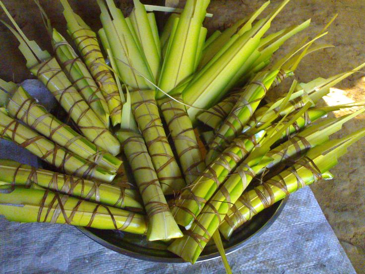
Lapa-lapa
Lapa-lapa adalah makanan khas Sulawesi Tenggara, tepatnya berasal dari daerah Buton. Memiliki cita rasa gurih, kuliner tradisional ini kerap muncul pada bulan Ramadan. Berikut adalah bahan dan cara membuatnya.
Bahan-bahan:
500 gram beras ketan putih
100 gram beras ketan merah
300 ml santan cair
1-2 sdt garam
2 lembar daun pandan
2 sdm minyak goreng
Cara membuat:
Campurkan kedua jenis beras ketan. Cuci bersih dan rendam selama 2 jam. Cuci bersih dan tiriskan.
Masukkan beras ketan ke dalam wajan besar.
Masukkan santan, garam, dan daun pandan. Aduk rata dan masak hingga beras ketan matang. Aduk terus agar tidak gosong dan gunakan api kecil jika santan sudah mendidih.
Jika air santannya sudah habis dan beras ketan cukup lembek, angkat. Sisihkan daun pandannya.
Ambil janur dan lapisi dengan daun pisang. Beri isian beras ketan, tutup dan ikat dengan janur.
Jika tidak cukup, bisa menggunakan tali rafia atau benang tebal. Lakukan hingga isian habis.
Panaskan kukusan, masukkan semua lapa-lapa dan kukus selama 2-3 jam lamanya. Angkat.
×
Resep Perangi
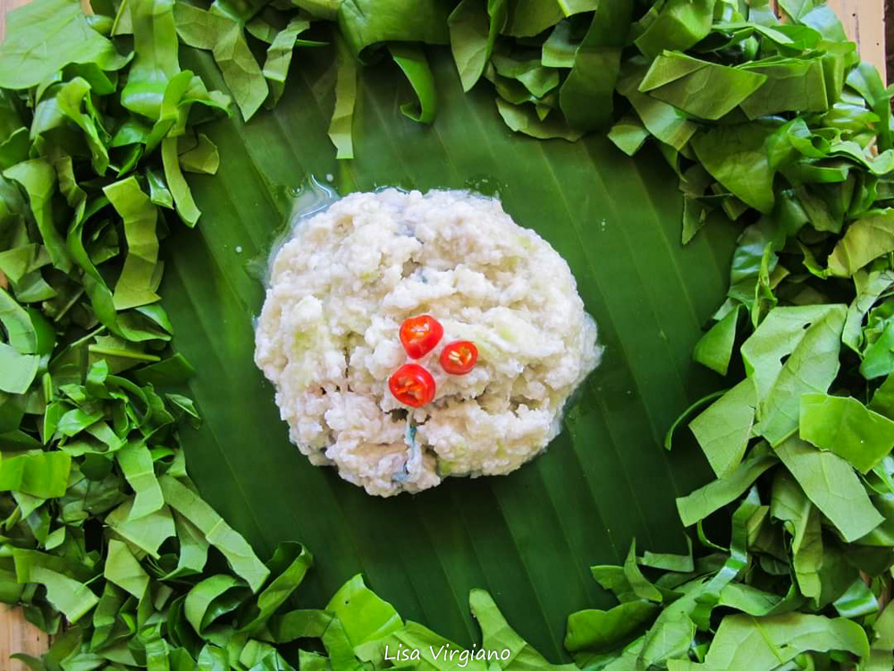
Perangi
Perangi adalah hidangan laut khas Pulau Kaledupa, Kabupaten Wakatobi, Sulawesi Tenggara. Makanan ini berbahan dasar ikan segar, biasanya ikan karang, yang diolah mentah dengan bumbu khas sehingga memiliki cita rasa segar, asam, asin, dan gurih
Bahan-bahan:
Ikan mentah yang segar (biasanya ikan karang)
Jeruk nipis secukupnya
Bawang merah secukupnya
Cabai rawit sesuai selera
Garam dan penyedap rasa secukupnya
Cara membuat:
Cuci bersih ikan segar hingga tidak ada darah yang tersisa.
Potong ikan kecil-kecil atau sesuai selera (fillet, cincang, atau dadu).
Iris bawang merah dan cabai, lalu peras jeruk nipis.
Masukkan potongan ikan ke dalam wadah, tambahkan perasan jeruk nipis, dan remas-remas hingga kuahnya berwarna putih.
Tambahkan irisan bawang merah, cabai, garam, dan penyedap rasa. Aduk rata sambil mencicipi rasanya.
Setelah rasa sesuai selera, sajikan segera agar tetap segar.
Saran Penyajian:
Hidangkan Perangi dengan makanan khas Wakatobi lainnya seperti luluta (nasi bambu), kasuami (terbuat dari singkong), atau ikan parende. Nikmati selagi segar.
×
Resep Saraba
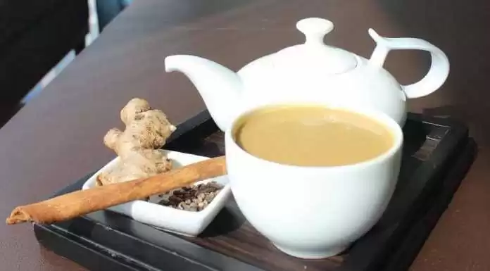
Saraba
Saraba adalah minuman dengan sari jahe dan rempah yang dicampur dengan susu. Minuman ini rasanya mirip dengan bandrek dan paling cocok dinikmati dengan pisang goreng.
Bahan-bahan:
Air 500 ml
Jahe merah 100 gram (dimemarkan)
Serai 20 gram (dimemarkan)
Cengkih 5 buah
Kayu manis 10 gram
Gula merah 150 gram
Garam 3 gram
Santan kental 100 ml
Susu 100 ml
Gelatin 50 gram (opsional)
Cara membuat:
Panaskan air hingga mendidih. Masukkan jahe, serai, cengkih, dan kayu manis. Masak dengan api kecil selama 20 menit. Tambahkan gula merah dan aduk hingga larut.
Campurkan gelatin dengan susu cair. Aduk hingga tercampur rata dan agak mengental. Masukkan campuran ini ke dalam panci. Aduk hingga gelatin larut.
Tambahkan santan kental dan aduk hingga merata.
Diamkan selama 3-5 menit, kemudian matikan api. Saring menggunakan saringan halus.
Saraba siap dinikmati selagi hangat.
Saran Penyajian:
Hidangkan Saraba dengan pisang goreng atau camilan favorit Anda untuk pengalaman yang lebih nikmat.
×
Resep Kue Bagea
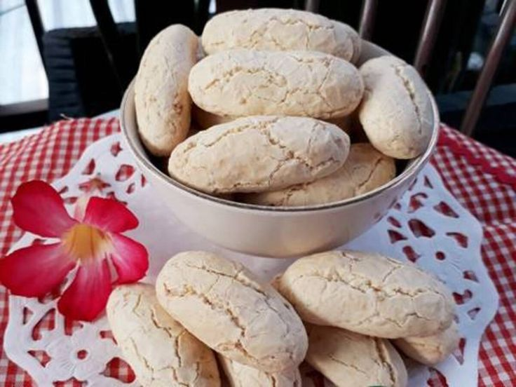
Bagea adalah kue tradisional yang berbahan baku tepung sagu yang dimasak dengan cara dipanggang dalam oven. Kue ini memiliki rasa yang gurih dan tekstur renyah, cocok untuk camilan.
Bahan-bahan:
1 butir telur
75 gr gula pasir
38 ml minyak sayur
100 gr tepung sagu
50 gr tepung terigu
50 gr kelapa sangrai
75 gr kacang tanah sangrai
¼ sdt kayu manis
1/3 sdt vanilla
¼ sdt baking soda
Cara membuat:
Masukkan telur dan gula, lalu aduk selama 3-5 menit sampai gula larut dan tercampur rata.
Masukkan minyak sayur, sambil diaduk terus.
Tambahkan tepung sagu, tepung terigu, kelapa sangrai, kacang tanah sangrai, kayu manis, vanilla, dan baking soda. Aduk adonan sampai tercampur rata.
Bentuk adonan menjadi bulat, lalu dibentuk lonjong dan letakkan di atas loyang. Berikan tambahan kacang mete sebagai garnish di atasnya.
Panggang dengan suhu 150°C selama kurang lebih 22 menit hingga matang.
Angkat dan dinginkan, sajikan bagea di piring saji atau simpan ke dalam toples.